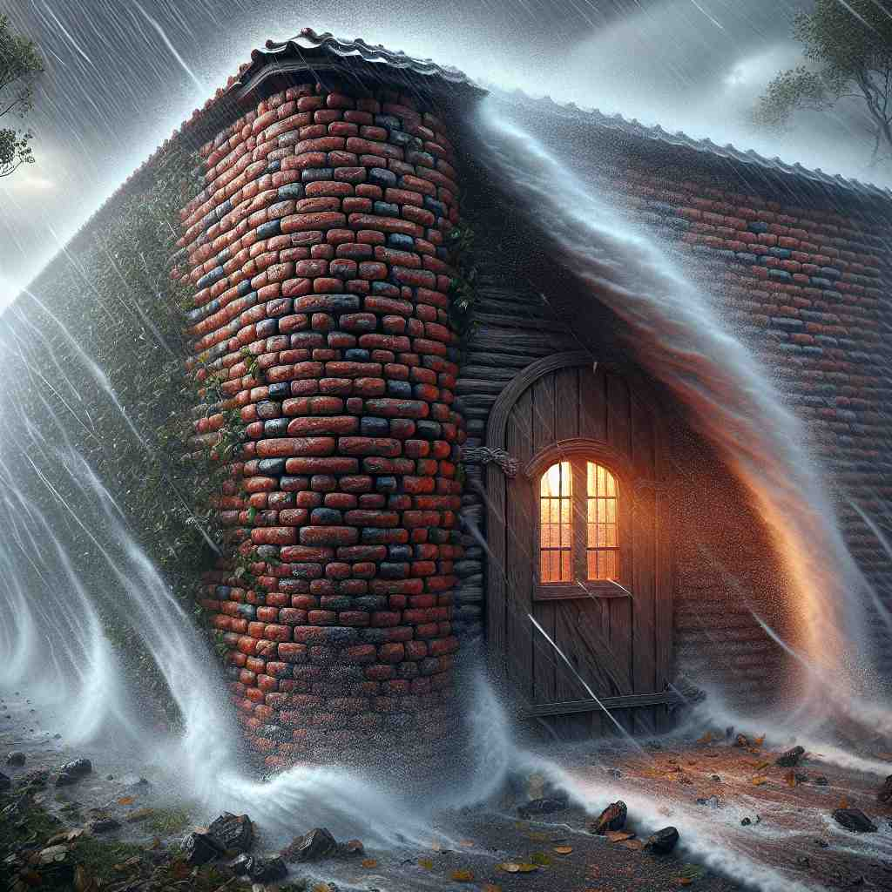

💬 The house is safe because of its strong brick wall structure.
💬 The children love to draw on the wall with colorful chalk.

💬 The great stone wall protects the land from invaders.
💬 They want to build a wall around the garden.
🔈 [wɔːl]
🗝️ n. a vertical structure, usually made of brick or stone, that divides or encloses an area
🖼️ 在一座古老的城堡中，一位游客正抬头欣赏周围高大坚固的砖石墙。这些墙壁将城堡与外界分隔开来，保护着内部的世界。
🔍 想象一堵实体的墙，它竖立、分隔、保护、阻挡。这个核心概念延伸到各种类似的结构和功能，无论是具体的（如房间的墙）还是抽象的（如情感障碍）。通过联想墙的基本特征——竖直、分隔、阻挡、保护，你可以更容易理解和记忆'wall'的各种用法。
💬 The house is safe because of its strong brick wall structure.
💬 The children love to draw on the wall with colorful chalk.
💬 The great stone wall protects the land from invaders.
💬 They want to build a wall around the garden.
🌳 这个词没有明显的前缀或后缀，源于古英语 "weall"，意指围墙或屏障，来自拉丁语 "vallum"。
💡 记住 "wall" 可以联想成一个保护或分开的屏障，想象墙壁将一个区域分隔开来，让你想起它的用途。
🗝️ n. any vertical surface or partition
🖼️ 一个现代化的办公室里，白色的墙壁上挂满了公司职员的最新项目图表和激励标语，激发着大家的创造力和努力工作。
💬 He hung a painting on the wall of his bedroom.
❓ 扩展了核心含义，包括任何类似墙的垂直面
🗝️ n. a barrier or obstacle
🖼️ 在一个陡峭的山坡前，徒步旅行者面对着一面难以逾越的岩石壁。他们需要找到一个新的路径来继续前行，这个岩石壁就像是一道障碍。
💬 There's a wall of silence surrounding the incident.
❓ 墙的阻隔功能引申为抽象的障碍
🗝️ v. to enclose or divide with a wall
🖼️ 在一个忙碌的建筑工地上，工人们正忙于砌墙，用新的砖墙将即将竣工的房屋划分成不同的房间。
💬 They walled off a section of the garden for a private seating area.
❓ 将名词用作动词，表示建造墙的动作
🗝️ n. a layer of material inside a container or body
🖼️ 在一个生物实验室里，研究人员正在显微镜下观察某个细胞组织的结构，注重研究细胞壁的特性和功能。
💬 The walls of the arteries harden with age.
❓ 类比墙的结构功能，指容器或身体内的层
🗝️ v. to defend or protect
🖼️ 在一个网络安全中心，技术专家们正在wall off不安全的网络连接，以保护公司的数据免受外界入侵者的攻击。
💬 He walled himself off from any emotional attachments.
❓ 墙的保护功能引申为一般的保护行为